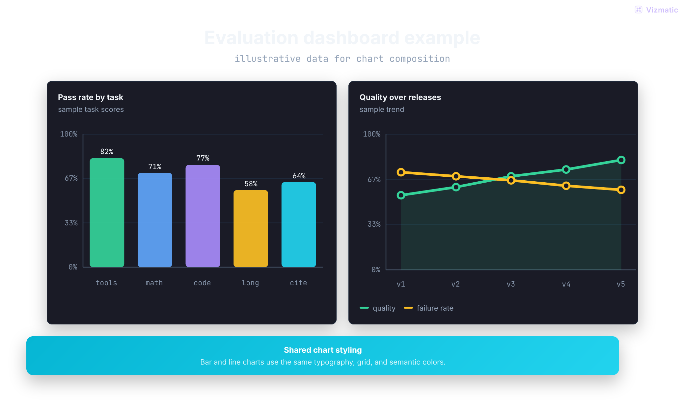
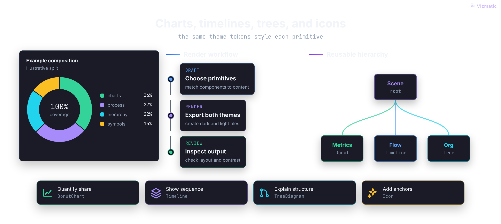
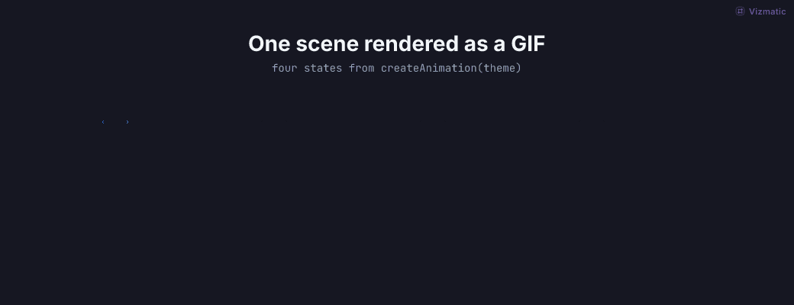
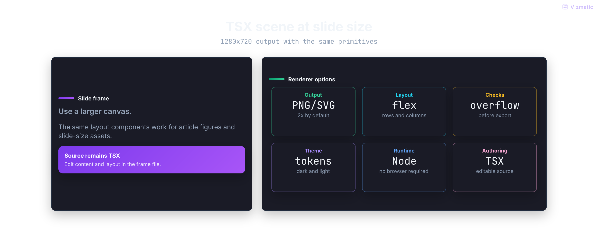
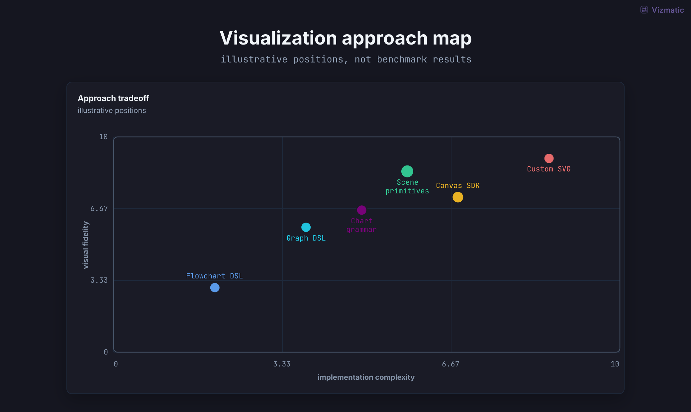

1 TSX fileeditable source
dark + lightone command
offline renderbundled assets
PNG · SVG · GIFready to publish
Selected work 01
Not another diagram syntax.
Dashboards, architecture, research figures, explainers, and motion from one scene system.

Evaluation dashboard data

Building blocks charts + hierarchy

Animated pipeline GIF

Presentation frame deck

Research landscape figure
First render 02
From idea to asset in one file.
No imports. No wrapper. No fixed dimensions. Titleless scenes are valid. Vizmatic grows transparent canvas to fit your scene.
Theme awareAuto sizedCI ready
<Scene title="Agent visual pipeline">
<Flow stages={[
{ title: "Prompt", tone: "blue" },
{ title: "Scene spec", tone: "purple" },
{ title: "PNG / SVG / GIF", tone: "green" },
]} />
</Scene>vizmatic ./frame.tsx --out ./dist/frames --theme dark,lightWhy it exists 03
Control without losing range.
Structured enough for production. Expressive enough for work people want to publish.
- 01Richer than Mermaid
- Charts, cards, matrices, timelines, trees, icons, and diagrams compose in one scene.
- 02Editable unlike image generation
- Source-controlled TSX stays inspectable, deterministic, and easy to revise.
- 03Headless by design
- Render directly in Node and CI. No browser screenshot pipeline to maintain.
- 04Theme aware
- Dark and light variants come from the same semantic scene definition.
Agent ready 04
Give your agent the visual system.
Paste the full prompt for instant context, or install the skill for a reusable workflow.
Codex marketplace
Install once. Invoke with $vizmatic.
Add Vizmatic marketplace to Codex, then use skill whenever you need a rendered visual asset.
codex plugin marketplace add bvolpato/vizmatic --ref mainRead full promptComplete, unedited PROMPT.md
# Vizmatic Agent Prompt
Use Vizmatic to create polished, theme-aware diagrams, figures, dashboards, presentation frames, and animated GIFs from structured React scene primitives.
## Fastest Path
Install the CLI once:
```bash
npm install -g vizmatic
```
Create `frame.tsx`:
```tsx
<Scene title="Agent visual pipeline">
<Flow
connectorTone="purple"
stages={[
{ title: "Prompt", tone: "blue" },
{ title: "Scene spec", tone: "purple" },
{ title: "PNG / SVG / GIF", tone: "green" },
]}
/>
</Scene>
```
Render dark and light assets:
```bash
vizmatic ./frame.tsx --out ./dist/frames --theme dark,light
```
## Project Installation
Use the package manager already present in the project.
Install in the project when the project needs scripts, editor types, or direct renderer APIs:
```bash
pnpm add vizmatic react
```
Optional edge build from GitHub:
```bash
pnpm add github:bvolpato/vizmatic react
```
For npm/yarn/bun projects, use the equivalent package-manager command.
## Larger Example
Create `frames/agent-pipeline.tsx`:
```tsx
width = 1040;
height = 560;
<Scene
title="Agent visual pipeline"
subtitle="prompt -> scene spec -> verified artifact"
gap={26}
>
<Flow
connectorTone="purple"
stages={[
{
eyebrow: "input",
title: "Prompt",
subtitle: "intent and constraints",
tone: "blue",
lines: ["domain language", "audience", "theme tokens"],
width: 190,
},
{
eyebrow: "contract",
title: "Scene spec",
subtitle: "typed structure",
tone: "purple",
lines: ["cards", "flows", "charts", "tables"],
width: 190,
},
{
eyebrow: "render",
title: "Satori frame",
subtitle: "React primitives",
tone: "cyan",
lines: ["layout defaults", "safe text", "semantic tones"],
width: 190,
},
{
eyebrow: "output",
title: "PNG / GIF",
subtitle: "CI-ready asset",
tone: "green",
lines: ["autocrop", "overflow checks", "retina scale"],
width: 190,
},
]}
/>
<Row width="100%" gap={14}>
<CalloutCard
title="Model writes structure"
detail="No hand-written SVG paths or brittle x/y layout for common cases."
tone="purple"
width={470}
/>
<CalloutCard
title="Design system stays in control"
detail="Theme tokens decide color, typography, radius, spacing, and contrast."
tone="green"
width={470}
/>
</Row>
</Scene>
```
Render it:
```bash
vizmatic frames --out public/vizmatic --theme dark,light --watermark "Your Product" --watermark-image ./logo.svg --watermark-position top-right
```
The generated `manifest.json` keeps `outputs` for compatibility and adds `outputDetails` with each file's theme, path, width, and height.
PNG and SVG renders use alpha-transparent canvas backgrounds by default. Use the actual theme background when the host needs a full-frame image:
```bash
vizmatic frames --out public/vizmatic --theme dark,light --background theme
```
Or set it in the frame:
```tsx
<Scene background={c.bg} title="Opaque article figure">
<Flow stages={[{ title: "Theme fill", tone: "purple" }]} />
</Scene>
```
If a direct CLI frame omits `width` or `height`, Vizmatic starts at `960x540` and grows to fit content when overflow is detected. Generated wrappers that export the default `960x540` size get the same fit-to-content behavior. Add `autoSize = false` when exact dimensions should stay strict and fail on clipping.
For direct CLI frames, skip imports, `defineIllustration`, and `c` props by default. The CLI injects Vizmatic primitives and theme colors. Reference `c` only when you need explicit theme tokens such as `background={c.bg}`. `Scene` title/subtitle are optional; omit both for visual-only figures, badges, inline blog diagrams, or frames where surrounding copy already supplies the title. Use the full module form when you need custom dependencies, direct renderer APIs, advanced reusable JSX helpers, or animation exports.
Frame modules can also export a watermark element when code-owned branding is clearer than CLI flags:
```tsx
import { Watermark } from "vizmatic"
export const watermark = (
<Watermark position="bottom-right" opacity={0.82}>
<div style={{
display: "flex",
alignItems: "center",
gap: 6,
color: "#7c3aed",
fontFamily: "Inter",
fontWeight: 800,
fontSize: 12,
}}>
<img src="data:image/svg+xml;base64,..." width={14} height={14} />
LeetLLM
</div>
</Watermark>
)
```
Render animated frames with `createScenes(theme)`:
```bash
vizmatic gif frames/animated-pipeline.tsx --out public/vizmatic --theme dark,light --watermark "Your Product" --watermark-image ./logo.svg --watermark-position top-right --scale 1
```
## Create an animated frame
Animated frames keep the same static `create(theme)` export and add `createScenes(theme)` for GIF output.
```tsx
import React from "react"
import {
CalloutCard,
defineIllustration,
Flow,
Scene,
getThemeColors,
type AnimatedScene,
type ThemeColors,
type ThemeMode,
} from "vizmatic"
export const width = 1040
export const height = 560
const stages = [
{ title: "Prompt", tone: "blue" as const },
{ title: "Scene spec", tone: "purple" as const },
{ title: "PNG / GIF", tone: "green" as const },
]
function buildFrame(c: ThemeColors, active: number) {
return (
<Scene c={c} title="Animated agent pipeline">
<Flow
c={c}
stages={stages.map((stage, index) => ({
...stage,
title: index <= active ? stage.title : "Pending",
tone: index <= active ? stage.tone : "neutral",
}))}
/>
<CalloutCard c={c} title="Scene changes over time" detail="Render with vizmatic gif." tone="green" />
</Scene>
)
}
const frame = defineIllustration((c) => buildFrame(c, stages.length - 1))
export function createScenes(theme: ThemeMode): AnimatedScene[] {
const c = getThemeColors(theme)
return stages.map((_, index) => ({
element: buildFrame(c, index),
duration: index === stages.length - 1 ? 1000 : 700,
transition: index === 0 ? "appear" : "fade",
}))
}
export const create = frame.create
export default frame.default
```
## Pick primitives first
Use Vizmatic primitives instead of raw SVG or absolute-positioned divs whenever possible. Drop to raw SVG only for custom geometry that a primitive cannot express.
Shared values:
- `ThemeMode`: `"dark" | "light"`.
- `ToneName`: `"blue" | "purple" | "green" | "warm" | "cyan" | "pink" | "red" | "critical" | "neutral" | "sunset" | "ocean" | "dark"`.
- `ColorName`: `"primary" | "secondary" | "positive" | "warning" | "critical" | "info" | "accent" | "neutral"`.
- `FlexAlign`: `"start" | "center" | "end" | "stretch"`.
- `FlexJustify`: `"start" | "center" | "end" | "space-between" | "space-around"`.
- In bare CLI frames, omit `c` props; the CLI injects theme colors into Vizmatic components. The local `c` token object is still available for explicit values like `background={c.bg}`.
- In full modules, most visual components require `c: ThemeColors`; inside `defineIllustration((c) => ...)`, pass that same `c` down.
- PNG/SVG renders are alpha-transparent by default. Use `--background theme`, `background: "theme"`, or `<Scene background={c.bg}>` for opaque theme fill.
- Omitted CLI dimensions auto-grow on overflow. Explicit `width` / `height` remain fixed and fail on clipping.
## Component API
Frame helpers:
- `defineIllustration(build, defaultTheme?)`: `build: (c: ThemeColors) => ReactElement`, `defaultTheme?: ThemeMode = "dark"`. Returns `{ create(theme), default }`.
- `Canvas`: `children?`, `c`, `padding?: number = 40`, `justify?: "center" | "flex-start" | "space-between" | "space-around" = "center"`, `background?: string`. Default root background is alpha-transparent during PNG/SVG rendering.
- `Scene`: `c`, `children`, `title?`, `subtitle?`, `padding?: number = 40`, `gap?: number = 24`, `justify?: Canvas.justify = "flex-start"`, `align?: FlexAlign = "stretch"`, `contentWidth?: number | string = "100%"`, `background?`, `contentStyle?: React.CSSProperties`. Title/subtitle are optional and the title bar is omitted when no title is provided. Use `background={c.bg}` for an opaque theme frame.
- `TitleBar`: `title`, `subtitle?`, `c`.
Layout primitives:
- `Row` / `Column`: `children`, `gap?: number = 12`, `align?: FlexAlign = "center"`, `justify?: FlexJustify = "center"`, `wrap?: boolean = false`, `width?: number | string`, `height?: number | string`, `style?: React.CSSProperties`.
- `Stack`: `children`, `direction?: "vertical" | "horizontal" = "vertical"`, `gap?: number = 12`, `align?: "start" | "center" | "end" | "stretch" = "center"`, `wrap?: boolean = false`.
- `Panel`: `title`, `c`, `children?`, `subtitle?`, `tone?: ToneName = "blue"`, `footer?`, `width?`, `minWidth?`, `height?`, `minHeight?`, `padding?: number | string = 14`, `radius?: number = 8`, `gap?: number = 10`, `align?: FlexAlign = "stretch"`, `justify?: FlexJustify = "start"`, `shadow?: boolean = true`, `background?`, `borderColor?`, `titleFontSize?`, `accentWidth?: number = 34`, `accentHeight?: number = 4`, `bodyStyle?: React.CSSProperties`.
- `Card`: `children?`, `c`, `title?`, `subtitle?`, `tone?`, `footer?`, `width?`, `minWidth?`, `height?`, `minHeight?`, `padding?: number | string = 20`, `radius?: number = 8`, `gap?`, `align?: FlexAlign = "stretch"`, `justify?: FlexJustify = "start"`, `shadow?: boolean = false`, `background?`, `borderColor?`, `bodyStyle?: React.CSSProperties`.
- `WindowFrame`: `c`, `children?`, `title?`, `variant?: "window" | "browser" | "terminal" = "window"`, `tone?: ToneName = "blue"`, `dots?: boolean = true`, `width?`, `minWidth?`, `height?`, `minHeight?`, `padding?: number | string = 16`, `radius?: number = 10`, `shadow?: boolean = true`, `background?`, `bodyStyle?: React.CSSProperties`.
Cards, labels, and compact UI:
- `TextLabel`: `text`, `c`, `variant?: keyof typography = "body"`, `color?`, `fontSize?`, `fontWeight?`, `width?`, `align?: "left" | "center" | "right" = "left"`, `math?: boolean = false`, `mono?: boolean = false`.
- `MathText`: `text`. Returns formatted unicode-ish math text for simple `_` and `^` notation.
- `formatMathText(text)`: `text: string`.
- `Icon`: `name`, `c`, `tone?: ToneName = "blue"`, `color?`, `size?: number = 24`, `strokeWidth?: number = 2`, `label?`, `muted?: boolean = false`. `IconName`: `"agent" | "chart" | "check" | "code" | "database" | "file" | "git" | "globe" | "image" | "layers" | "lock" | "play" | "spark" | "terminal" | "tool" | "warning"`.
- `ToneStrip`: `tone`, `width?: number = 34`, `height?: number = 4`.
- `StepCard`: `title`, `c`, `subtitle?`, `eyebrow?`, `tone?: ToneName = "blue"`, `width?: number | string = 210`, `minWidth?`, `minHeight?: number | string = 74`, `padding?: number | string = "12px 14px"`, `radius?: number = 8`, `shadow?: boolean = true`, `align?: "left" | "center" = "center"`, `math?: boolean = false`.
- `MetricCard`: `label`, `value`, `c`, `tone?: ToneName = "blue"`, `detail?`, `width?`, `minWidth?`, `minHeight?: number | string = 74`, `padding?: number | string = "10px 12px"`, `radius?: number = 8`, `shadow?: boolean = true`, `align?: "left" | "center" = "center"`, `math?: boolean = false`, `valueMono?: boolean = true`, `valueFontSize?: number = 10`, `valueColor?`.
- `CalloutCard`: `c`, `children?`, `title?`, `detail?`, `tone?: ToneName = "blue"`, `width?`, `minHeight?`, `padding?: number | string = 12`, `filled?: boolean = true`, `align?: "left" | "center" = "center"`.
- `ValuePill`: `label`, `value`, `c`, `tone?: ToneName = "blue"`, `detail?`, `width?: number | string = 112`, `math?: boolean = false`.
- `BadgePill`: `text`, `c`, `tone?: ToneName = "blue"`, `width?`, `minWidth?: number | string = 34`, `height?: number | string = 20`, `padding?: number | string = "0 8px"`, `radius?: number = 6`, `fontSize?: number = 9`, `mono?: boolean = true`, `filled?: boolean = false`, `math?: boolean = false`.
- `Badge`: `label`, `c`, `color?: ColorName = "primary"`.
- `GradientChip`: `title`, `c`, `subtitle?`, `tone?: ToneName = "blue"`, `gradient?`, `width?`, `minWidth?`, `height?`, `minHeight?: number | string = 78`, `padding?: number | string = "0 18px"`, `radius?: number = 8`, `shadow?: boolean = true`, `align?: "left" | "center" = "left"`, `subtitleMono?: boolean = true`, `math?: boolean = false`.
- `EquationCard`: `title`, `formula`, `c`, `tone?: ToneName = "purple"`, `result?`, `detail?`, `width?: number | string = 190`, `height?`, `math?: boolean = false`, `align?: "left" | "center" = "left"`.
- `DetailList`: `items`, `c`, `tone?`, `gap?: number = 7`, `padding?: number | string = "7px 8px"`, `fontSize?: number = 10`, `mono?: boolean = false`, `math?: boolean = false`.
Lists, tables, status, and comparison:
- `ProgressRow`: `label`, `value: number`, `valueLabel?`, `tone?: ToneName = "blue"`, `muted?: boolean = false`, `c`, `labelWidth?: number = 42`, `valueWidth?: number = 38`, `barHeight?: number = 8`, `fontSize?: number = 10`. Keep `value` in `[0, 1]`.
- `ProgressList`: `rows: ProgressRowSpec[]`, `c`, `gap?: number = 8`, `labelWidth?`, `valueWidth?`, `barHeight?`, `fontSize?`. `ProgressRowSpec`: `label`, `value`, `valueLabel?`, `tone?`, `muted?`.
- `StatusRow`: `label`, `detail?`, `status?: "check" | "cross" | "warn" | "info" | "pending" | "dot" = "check"`, `tone?`, `c`, `boxed?: boolean = true`, `fontSize?: number = 11`, `width?`, `math?: boolean = false`.
- `StatusList`: `rows: StatusRowSpec[]`, `c`, `gap?: number = 7`, `boxed?: boolean = true`, `fontSize?`, `width?`, `math?: boolean = false`. `StatusRowSpec`: `label`, `detail?`, `status?`, `tone?`.
- `Timeline`: `events: TimelineEventSpec[]`, `c`, `title?`, `subtitle?`, `direction?: "vertical" | "horizontal" = "vertical"`, `width?`, `eventWidth?`, `gap?: number = 12`, `markerSize?: number = 14`, `math?: boolean = false`. `TimelineEventSpec`: `title`, `detail?`, `time?`, `tone?`, `status?`, `width?`.
- `KeyValueList`: `rows: KeyValueRow[]`, `c`, `title?`, `width?`, `minWidth?`, `keyWidth?`, `gap?: number = 0`, `fontSize?: number = 11`, `divider?: boolean = true`, `keyMono?: boolean = false`, `math?: boolean = false`. `KeyValueRow`: `key`, `value`, `tone?`, `valueMono?`.
- `Comparison`: `sides: ComparisonSideSpec[]`, `c`, `divider?: ReactNode | boolean = false`, `gap?: number = 14`, `sideWidth?`, `minHeight?`, `align?: FlexAlign = "stretch"`, `math?: boolean = false`. `ComparisonSideSpec`: `title`, `subtitle?`, `eyebrow?`, `tone?`, `lines?`, `children?`, `footer?`, `width?`.
- `DataTable`: `rows: ReactNode[][]`, `c`, `cellWidth?: number = 54`, `firstColWidth?: number = cellWidth`, `cellHeight?: number = 28`, `gap?: number = 5`, `headerRows?: number = 1`, `headerCols?: number = 1`, `fontSize?: number = 10`, `math?: boolean = false`.
- `Grid`: `rows: Array<Array<ReactNode | GridCell>>`, `c`, `cellWidth?: number = 34`, `cellHeight?: number = 30`, `gap?: number = 5`, `radius?: number = 7`, `fontSize?: number = 10`, `math?: boolean = false`, `headerRows?: number = 0`, `headerCols?: number = 0`. `GridCell`: `label?`, `tone?`, `color?`, `backgroundColor?`, `borderColor?`, `opacity?`.
- `CodeBlock`: `lines: Array<ReactNode | CodeLineSpec>`, `c`, `title?`, `tone?`, `width?`, `minWidth?`, `fontSize?: number = 12`, `showLineNumbers?: boolean = false`, `padding?: number | string = 14`, `radius?: number = 10`, `background?`, `shadow?: boolean = false`, `math?: boolean = false`. `CodeLineSpec`: `text`, `tone?`, `dim?`, `prefix?`.
Tiles:
- `Tile`: combines `TileSpec` with display props. `TileSpec`: `title`, `subtitle?`, `eyebrow?`, `icon?`, `tone?`, `lines?`, `children?`, `width?`, `minHeight?`. Display props: `c`, `align?: "left" | "center" = "center"`, `padding?: number | string = "14px 16px"`, `radius?: number = 10`, `shadow?: boolean = true`, `math?: boolean = false`.
- `TileGrid`: `tiles: TileSpec[]`, `c`, `columns?`, `gap?: number = 12`, `tileWidth?`, `minHeight?`, `align?: "left" | "center" = "center"`, `math?: boolean = false`.
Flows and process diagrams:
- `Flow`: `stages: FlowStageSpec[]`, `c`, `direction?: "horizontal" | "vertical" = "horizontal"`, `gap?: number = 10`, `connectorLength?: number = 28`, `connectorTone?: ToneName = "neutral"`, `align?: FlexAlign = "center"`, `math?: boolean = false`. `FlowStageSpec`: `title`, `subtitle?`, `eyebrow?`, `tone?`, `lines?`, `children?`, `width?`, `minWidth?`, `minHeight?`, `padding?`.
- `FlowArrow`: `direction?: "down" | "right" | "up" | "left" = "right"`, `label?`, `length?: number = 40`, `c`, `tone?: ToneName = "blue"`, `color?`.
- `Connector`: same props as `FlowArrow`.
- `Pipeline`: `stages: PipelineStage[]`, `c`, `title?`. `PipelineStage`: `label`, `sublabel?`, `icon?`, `color?: ColorName`.
Graphs and networks:
- `LayeredNetwork`: `c`, `layers: LayeredNetworkLayer[]`, `activePath?: number[] = []`, `annotations?: string[] = []`, `formula?`, `legend?: string = "highlighted path"`, `width?: number = 900`, `height?: number = 400`, `nodeSize?: number = 56`, `showFormula?: boolean = true`. `LayeredNetworkLayer`: `title`, `nodes: string[]`, `tone?`.
- `GraphDiagram`: `nodes: GraphDiagramNode[]`, `edges: GraphDiagramEdge[]`, `c`, `width?: number = 520`, `height?: number = 420`, `nodeWidth?: number = 150`, `nodeHeight?: number = 66`, `padding?: number = 28`. `GraphDiagramNode`: `id`, `label`, `detail?`, `x`, `y`, `tone?`, `muted?`, `width?`, `height?`. `GraphDiagramEdge`: `from`, `to`, `tone?`, `muted?`, `dashed?`, `label?`.
- `TreeDiagram`: `root: TreeNodeSpec`, `c`, `title?`, `subtitle?`, `width?`, `height?`, `nodeWidth?: number = 156`, `nodeHeight?: number = 64`, `levelGap?: number = 58`, `siblingGap?: number = 24`, `padding?: number = 28`, `math?: boolean = false`. `TreeNodeSpec`: `label`, `id?`, `detail?`, `tone?`, `muted?`, `children?`.
Matrices and heatmaps:
- `Matrix`: `data: number[][]`, `c`, `rowLabels?`, `colLabels?`, `labels?`, `title?`, `cellSize?: number = 48`, `cellWidth?`, `cellHeight?`, `rowLabelWidth?`, `format?: "decimal" | "percent" | "integer" = "decimal"`, `colorize?: boolean = true`, `colorScale?: "heat" | "strength" = "heat"`.
- `Heatmap`: `data: number[][]`, `xLabels`, `yLabels`, `c`, `labels?`, `title?`, `cellSize?: number = 52`, `cellWidth?`, `cellHeight?`, `rowLabelWidth?`, `colorScale?: "heat" | "strength"`.
- `TiledMatrix`: `rows`, `cols`, `c`, `regions?: TiledMatrixRegion[] = []`, `title?`, `subtitle?`, `cellSize?: number = 24`, `gap?: number = 3`, `tone?: ToneName = "blue"`, `muted?: boolean = false`, `crossedOut?: boolean = false`. `TiledMatrixRegion`: `rowStart`, `rowEnd`, `colStart`, `colEnd`, `tone?`.
Charts and plots:
- `ChartFrame`: `children`, `c`, `title?`, `subtitle?`, `legend?: ChartLegendItem[]`, `footer?`, `width?: number | string = "100%"`, `height?`, `padding?: number = 16`. `ChartLegendItem`: `label`, `color: ColorName | string`.
- `DonutChart`: `segments: DonutChartSegment[]`, `c`, `title?`, `subtitle?`, `width?: number = 360`, `height?: number = 230`, `size?`, `thickness?`, `format?: ChartValueFormat = "decimal"`, `centerLabel?`, `centerValue?`, `showLegend?: boolean = true`, `footer?`. `DonutChartSegment`: `label`, `value`, `color?`, `valueLabel?`.
- `BarChart`: `data: BarChartDatum[]`, `c`, `title?`, `subtitle?`, `width?: number = 320`, `height?: number = 220`, `min?`, `max?`, `format?: ChartValueFormat = "decimal"`, `showGrid?: boolean = true`, `showValues?: boolean = true`, `yAxisLabel?`, `footer?`. `BarChartDatum`: `label`, `value`, `color?`, `valueLabel?`.
- `LineChart`: `series: LineChartSeries[]`, `c`, `title?`, `subtitle?`, `width?: number = 420`, `height?: number = 240`, `labels?`, `min?`, `max?`, `format?: ChartValueFormat = "decimal"`, `showGrid?: boolean = true`, `showPoints?: boolean = true`, `yAxisLabel?`, `footer?`. `LineChartSeries`: `name`, `points`, `color?`, `area?`.
- `ScatterPlot`: `points: ScatterPoint[]`, `c`, `title?`, `subtitle?`, `width?: number = 380`, `height?: number = 260`, `xMin?`, `xMax?`, `yMin?`, `yMax?`, `xAxisLabel?`, `yAxisLabel?`, `formatX?: ChartValueFormat = "decimal"`, `formatY?: ChartValueFormat = "decimal"`, `showGrid?: boolean = true`, `footer?`. `ScatterPoint`: `x`, `y`, `label?`, `color?`, `size?`.
- `QuadrantChart`: `points: ScatterPoint[]`, `regions`, `c`, `title?`, `subtitle?`, `width?: number = 700`, `height?: number = 360`, `xAxisLabel?`, `yAxisLabel?`, `footer?`. `regions`: `{ topLeft, topRight, bottomLeft, bottomRight }`, each `QuadrantRegion`: `label`, `detail?`, `color?`.
- `IntervalPlot`: `data: IntervalDatum[]`, `c`, `title?`, `subtitle?`, `width?: number = 640`, `height?: number = 220`, `min?`, `max?`, `format?: ChartValueFormat = "decimal"`, `axisLabel?`, `footer?`. `IntervalDatum`: `label`, `low`, `mid`, `high`, `color?`, `lowLabel?`, `midLabel?`, `highLabel?`.
- `StackedBar`: `segments: StackedBarSegment[]`, `c`, `width?: number = 480`, `height?: number = 68`, `title?`, `subtitle?`, `showLegend?: boolean = true`. `StackedBarSegment`: `label`, `value`, `color?`, `valueLabel?`.
- `MiniBarChart`: `data: MiniBarDatum[]`, `c`, `max?`, `minBarHeight?: number = 8`, `height?: number = 92`, `barWidth?: number = 22`, `gap?: number = 10`, `radius?: number = 7`, `fontSize?: number = 9`, `showValues?: boolean = false`. `MiniBarDatum`: `label`, `value`, `tone?`, `color?`, `valueLabel?`, `opacity?`.
- `AxisPlot`: `c`, `width`, `height`, `xMin?: number = -1`, `xMax?: number = 1`, `yMin?: number = -1`, `yMax?: number = 1`, `padding?: number = 18`, `showFrame?: boolean = true`, `showAxes?: boolean = true`, `showGrid?: boolean = false`, `gridCount?: number = 5`, `frameRx?: number = 8`, `frameFill?`, `frameStroke?`, `axisColor?`, `points?: AxisPlotPoint[] = []`, `vectors?: AxisPlotVector[] = []`, `paths?: AxisPlotPath[] = []`, `xAxisLabel?`, `yAxisLabel?`, `children?`.
- `AxisPlotPoint`: `x`, `y`, `fill?`, `tone?`, `r?`, `stroke?`, `strokeWidth?`, `opacity?`.
- `AxisPlotVector`: `x1`, `y1`, `x2`, `y2`, `color?`, `tone?`, `strokeWidth?`, `opacity?`, `arrow?`, `arrowSize?`, `showStartDot?`, `showEndDot?`, `dotRadius?`.
- `AxisPlotPath`: `points: Array<{ x, y }>`, `color?`, `tone?`, `strokeWidth?`, `opacity?`, `interpolation?: "linear" | "step-after"`, `dashed?`.
- `ChartValueFormat`: `"decimal" | "percent" | "integer" | "compact" | ((value: number) => string)`.
SVG and geometry helpers:
- `SvgFrame`: `key?`, `x?: number = 0`, `y?: number = 0`, `width`, `height`, `c`, `rx?: number = 8`, `fill?`, `stroke?`, `strokeWidth?: number = 1`, `opacity?`.
- `SvgPoint`: `key?`, `cx`, `cy`, `r?: number = 5`, `fill`, `stroke?`, `strokeWidth?`, `opacity?`.
- `SvgMathText`: `text`, `x`, `y`, `fill`, `fontSize?: number = 13`, `fontFamily?: string = "JetBrains Mono"`, `fontWeight?: number = 800`, `textAnchor?: "start" | "middle" | "end" = "middle"`, `dominantBaseline?: string = "middle"`, `opacity?: number = 1`.
- `SvgFrame` pairs well with `VectorArrow`, `VectorSegment`, `SvgPoint`, `DotPoint`, `DashedLine`, and `Legend` inside custom SVG.
- `Arrow`: `direction?: "down" | "right" | "up" | "left" = "down"`, `label?`, `length?: number = 40`, `c`, `color?`.
- `VectorArrow`: `key?`, `x1`, `y1`, `x2`, `y2`, `color`, `strokeWidth?: number = 2`, `arrowSize?: number = 2.2`, `opacity?: number = 1`.
- `VectorSegment`: `key?`, `x1`, `y1`, `x2`, `y2`, `color`, `strokeWidth?: number = 4`, `opacity?: number = 1`, `showStartDot?: boolean = false`, `showEndDot?: boolean = true`, `dotRadius?: number = 4.5`.
- `Box`: `label`, `c`, `color?: ColorName = "primary"`, `width?`, `height?`, `fontSize?: number = 14`, `gradient?: boolean = false`, `sublabel?`, `icon?`, `radius?: number = 8`, `outlined?: boolean = false`.
- `ArrowMarkerDef`: `id`, `color`, `size?: number = 5`.
- `DotPoint`: `x`, `y`, `label`, `color`, `c`, `size?: number = 12`, `labelOffset?: { x?: number; y?: number }`.
- `DashedLine`: `x1`, `y1`, `x2`, `y2`, `color`, `dotSpacing?: number = 8`, `dotSize?: number = 2`.
- `Legend`: `items: LegendItem[]`, `c`, `title?`. `LegendItem`: `label`, `color`, `style?: "solid" | "dashed"`.
Theme and render APIs:
- `getThemeColors(mode)`: `mode: ThemeMode`.
- `getToneColor(tone, c)`, `getToneGradient(tone)`, `getColor(name, c?)`, `getGradient(name)`, `heatColor(value)`.
- `renderToPng(element, options, createFn?, theme?)`: `element`, `options: RenderOptions`, `createFn?: (theme: "dark" | "light") => ReactNode`, `theme?: "dark" | "light"`.
- `Watermark`: JSX marker component for frame-module exports. Props are `WatermarkOptions` plus `children?: ReactNode`; children become the complete watermark body.
- `WatermarkInput`: `boolean | string | WatermarkOptions | ReactElement<WatermarkElementProps>`. `true` uses Vizmatic defaults. A string sets the watermark text. A React element can be `<Watermark>...</Watermark>` or any custom element.
- `WatermarkImageOptions`: `src`, `width?: number`, `height?: number`, `alt?: string`. Programmatic `src` should be a URL or data URI. CLI `--watermark-image` accepts URL, data URI, or local path.
- `WatermarkOptions`: `text?: string | false`, `image?: string | WatermarkImageOptions`, `icon?: ReactNode | string | false`, `element?: ReactNode`, `position?: "top-left" | "top-right" | "bottom-left" | "bottom-right" = "top-right"`, `opacity?: number`, `color?: string`.
- `RenderOptions`: `width`, `height`, `outputPath`, `background?: "transparent" | "theme" | CSS color = "transparent"`, `theme?: "dark" | "light" = "dark"` for direct-render watermark defaults, `watermark?: WatermarkInput`, `brand?: boolean | string` as a compatibility alias, `crop?: boolean | "height" | "both" = true`, `scale?: number = 2`. Use `crop: "height"` when host layouts require stable width but should still trim extra vertical whitespace.
- `renderToBuffer(element, width, height, options?)`: `options` supports `background?`, `theme?`, `watermark?`, `brand?`, `scale?`.
- `renderToSvg(element, width, height, options?)`: `options` supports `background?`, `theme?`, `watermark?`, `brand?`.
- `renderAnimatedGif(scenes, options)`: `scenes: AnimatedScene[]`, `options: AnimationOptions`.
- `AnimatedScene`: `element`, `duration` in ms, `transition?: "none" | "fade" | "appear"`, `transitionDuration?`, `label?`.
- `AnimationOptions`: `width`, `height`, `outputPath`, `loop?: number = 0`, `scale?: number = 1`, `background?: "theme" | "transparent" | CSS color = "theme"`, `watermark?: WatermarkInput`, `brand?: boolean | string` as a compatibility alias, `theme?: "dark" | "light" = "dark"`. Transparent GIFs use one-bit transparency; use PNG/SVG when smooth alpha edges matter.
## Prop-aware examples
### Window + code + status
```tsx
width = 1040;
height = 560;
<Scene title="Release gate" subtitle="tool output and checklist">
<Row gap={18} align="stretch">
<WindowFrame title="ci.log" variant="terminal" tone="green" width={520}>
<CodeBlock
fontSize={12}
showLineNumbers
lines={[
{ text: "pnpm typecheck", tone: "green", prefix: "$" },
{ text: "pnpm test", tone: "green", prefix: "$" },
{ text: "pnpm render:examples", tone: "cyan", prefix: "$" },
]}
/>
</WindowFrame>
<StatusList
width={360}
rows={[
{ label: "Types", detail: "clean", status: "check", tone: "green" },
{ label: "Visuals", detail: "dark/light generated", status: "check", tone: "cyan" },
{ label: "NPM", detail: "auth required", status: "warn", tone: "warm" },
]}
/>
</Row>
</Scene>
```
### Matrix + chart
```tsx
width = 1040;
height = 560;
<Scene title="Attention audit" subtitle="weights, scores, and distribution">
<Row gap={18} align="stretch">
<Heatmap
title="Attention"
xLabels={["q1", "q2", "q3"]}
yLabels={["k1", "k2", "k3"]}
data={[
[0.9, 0.2, 0.1],
[0.4, 0.8, 0.2],
[0.1, 0.3, 0.7],
]}
/>
<Matrix
title="Scores"
format="decimal"
rowLabels={["A", "B", "C"]}
colLabels={["x", "y", "z"]}
data={[
[0.4, 0.7, 0.2],
[0.5, 0.2, 0.8],
]}
/>
<StackedBar
width={300}
title="Token budget"
segments={[
{ label: "prompt", value: 42, color: "primary" },
{ label: "context", value: 38, color: "info" },
{ label: "answer", value: 20, color: "positive" },
]}
/>
</Row>
</Scene>
```
## Quality rules
- Use semantic tones, not hard-coded colors: `blue`, `purple`, `green`, `warm`, `cyan`, `pink`, `critical`, `ocean`, `neutral`.
- Keep canvas sizes explicit. Good defaults: `1040x560` for article figures, `1280x720` for slide frames, `900x520` for compact diagrams.
- For exploratory direct CLI frames, dimensions may be omitted; Vizmatic starts at `960x540` and grows to fit content if overflow is detected.
- Prefer alpha-transparent PNG/SVG backgrounds for blog embeds and docs cards. Use theme backgrounds only when the host surface is unknown or needs full-frame fill.
- Use `width`, `minWidth`, `height`, `minHeight`, `gap`, and `padding` props to stabilize layout.
- Keep text short. Use `TextLabel`, `Panel`, `StepCard`, `MetricCard`, `DataTable`, and `Grid` for wrapping-safe labels.
- Render both dark and light when shipping reusable assets: `--theme dark,light`.
- Use GIF only when motion explains state change. Keep scenes short, export `createScenes(theme)`, and keep a static `create(theme)` fallback.
- If render fails with `Canvas overflow detected`, the frame has strict dimensions. Increase canvas dimensions, reduce content density, or remove strict sizing for CLI auto-fit. Do not ignore the error.
- Verify generated PNGs/GIFs exist and are non-empty. Open at least one rendered image before finalizing.
## Common recipes
### RAG graph
```tsx
width = 1040;
height = 560;
<Scene title="RAG control graph" subtitle="retrieval is a graph, not a prompt append" align="center">
<GraphDiagram
width={820}
height={390}
nodes={[
{ id: "query", label: "Query", detail: "intent", x: 0.08, y: 0.52, tone: "blue" },
{ id: "retrieve", label: "Retrieve", detail: "top-k docs", x: 0.40, y: 0.25, tone: "cyan" },
{ id: "rerank", label: "Rerank", detail: "quality gate", x: 0.68, y: 0.25, tone: "warm" },
{ id: "answer", label: "Answer", detail: "grounded draft", x: 0.92, y: 0.52, tone: "green" },
{ id: "verify", label: "Verify", detail: "citations", x: 0.52, y: 0.78, tone: "critical" },
]}
edges={[
{ from: "query", to: "retrieve", label: "search", tone: "blue" },
{ from: "retrieve", to: "rerank", label: "rank", tone: "cyan" },
{ from: "rerank", to: "answer", label: "context", tone: "green" },
{ from: "answer", to: "verify", label: "claims", tone: "critical" },
{ from: "verify", to: "retrieve", label: "retry", dashed: true, tone: "warm" },
]}
/>
</Scene>
```
### Evaluation dashboard
```tsx
width = 1040;
height = 620;
<Scene title="Evaluation snapshot" subtitle="charts inherit theme, labels, and contrast">
<Row gap={18} align="stretch">
<BarChart
width={440}
height={260}
title="Pass rate by task"
format="percent"
data={[
{ label: "tools", value: 0.82, color: "positive" },
{ label: "math", value: 0.71, color: "secondary" },
{ label: "code", value: 0.77, color: "primary" },
{ label: "long", value: 0.58, color: "warning" },
]}
/>
<LineChart
width={440}
height={260}
title="Quality over releases"
format="percent"
labels={["v1", "v2", "v3", "v4", "v5"]}
series={[
{ name: "quality", points: [0.55, 0.61, 0.69, 0.74, 0.81], color: "positive", area: true },
{ name: "latency", points: [0.72, 0.69, 0.66, 0.62, 0.59], color: "warning" },
]}
/>
</Row>
</Scene>
```
## Final answer checklist
After creating a Vizmatic visual, report:
- files created or changed
- render command used
- output image paths, including GIF paths when generated
- whether dark/light variants rendered
- any overflow or layout fixes made